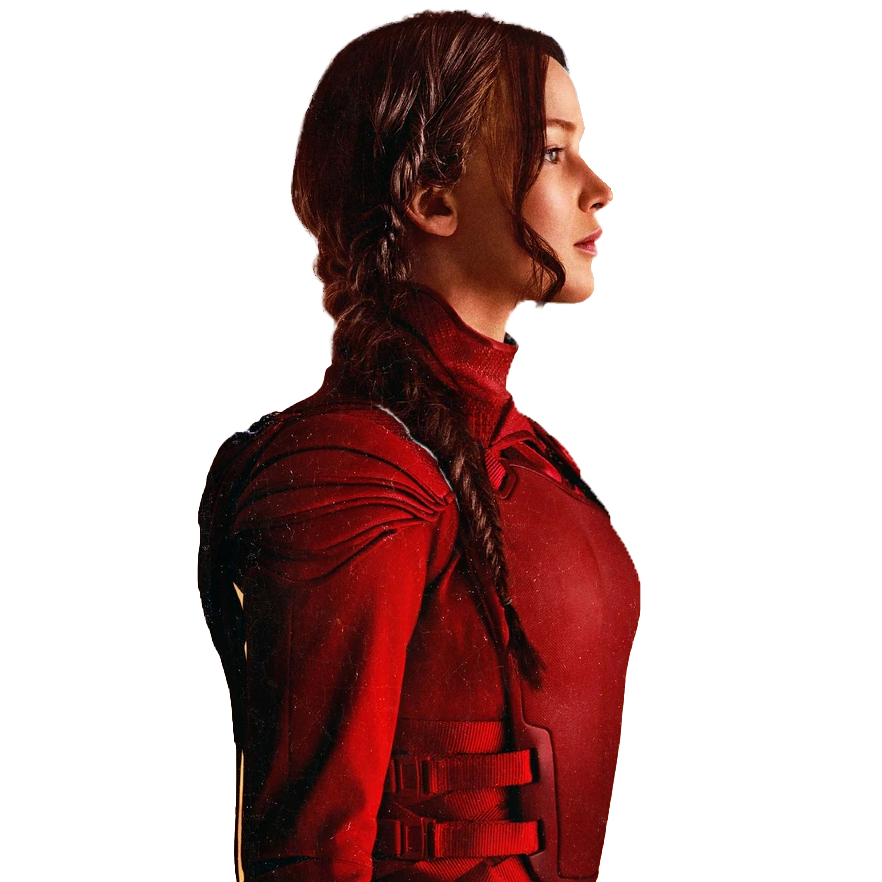

El Sinsajo
LOS JUEGOS DEL HAMBRE
Cuando Katniss Everdeen comenzó su lucha contra el Capitolio, no solo luchaba con armas. Desde el momento en que se convirtió en el rostro de la rebelión, su imagen comenzó a ser un arma en sí misma. Al principio, Katniss no lo entendía del todo. Su imagen, su historia, fue tomada y moldeada por las fuerzas de la rebelión como una estrategia de marketing, casi como un producto que podía ser vendido al pueblo. El sinsajo, un símbolo de resistencia, comenzó a ser mostrado en todas partes, no solo en las calles, sino también en las pantallas, en las noticias, en las conversaciones. El poder de la propaganda que el Capitolio había usado ahora era un arma en manos de los rebeldes. La gente necesitaba creer en algo, y el sinsajo era la respuesta visual que les daba esperanza. Pero detrás de todo eso, había una estrategia calculada. Los rebeldes sabían que el símbolo de Katniss, el sinsajo, podía ser más poderoso que cualquier ejército. Al igual que el Capitolio usaba la estética y la propaganda para mantener el control, la rebelión comenzó a usar la misma estrategia, pero con un mensaje distinto: la lucha por la libertad y la justicia.
“Sólo intenta ganar. Tal vez puedas”. Primrose EverdeenDescargar revista en PDF 